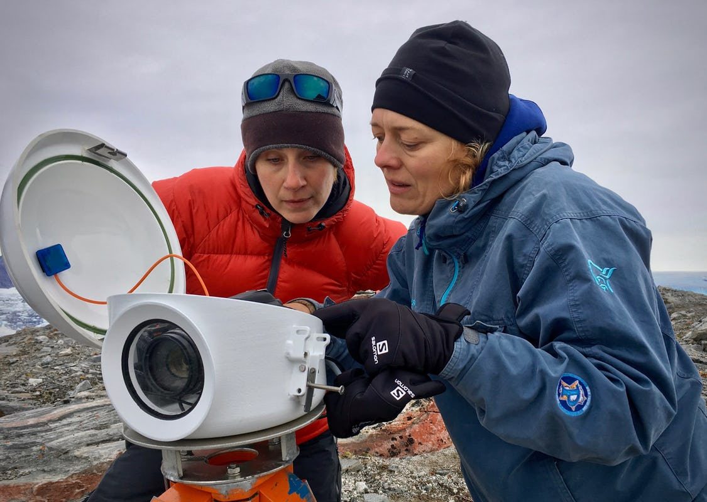

Launch Your Future as a Sustainability Analyst
Use data to help organizations cut waste and protect the planet!
Pathway Snapshot
High School Courses | College Majors | Career Roles |
Environmental Science | Sustainability Studies | Sustainability Analyst |
AP Biology | Environmental Science | ESG Analyst |
AP Statistics | Data Science | Climate Data Analyst |
Computer Science | Economics | Corporate Sustainability Analyst |
Geography | Environmental Engineering | Impact Measurement Analyst |
Women Who Lead the Way
Dr. Hannah Ritchie
Deputy Editor, Our World in Data; Senior Researcher, University of Oxford.
Photo Credit: Our World in Data)
"Good data can change how the world understands and solves its biggest problems."
Dr. Ritchie is a Scottish data scientist, writer, and sustainability researcher known for her work translating complex environmental data into accessible insights. She serves as Deputy Editor and Lead Researcher at Our World in Data and is a Senior Researcher at the Oxford Martin Programme in Global Development at the University of Oxford. Her research centers on global sustainability, climate change, and data-driven approaches to environmental progress.
Day in the Life
Daily Tasks | Tools & Technologies Used |
Analyze environmental and ESG data | Excel, Google Sheets |
Track carbon emissions & sustainability metrics | Python, R |
Create dashboards and reports | Tableau, Power BI |
Support sustainability strategies | Life Cycle Assessment (LCA) tools |
Collaborate with business & tech teams | SQL databases, cloud platforms |
Mini-Activity: Try This!
Carbon Footprint Snapshot
- Pick a product you use every day (water bottle, hoodie, phone).
- Research where it’s made and what materials are used.
- Estimate its environmental impact (transport, materials, energy).
- Write one idea to reduce its footprint.
That’s real sustainability analysis in action.
Careers & Resources
Degree Program Finder:
- University sustainability & environmental science programs
Scholarships:
- Environmental Defense Fund
- UN Foundation
- Local STEM scholarships
Summer Programs & Bootcamps:
- Climate data camps
- Sustainability research programs
Explore More:
- O*NET – Career skills & outlook
- Roadtrip Nation – Real career stories
You Belong Here
If you love data, problem-solving, and protecting the planet, sustainability analysis could be your future.
You don’t have to choose between impact and technology—this career lets you lead with both.
